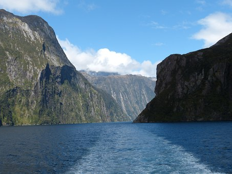
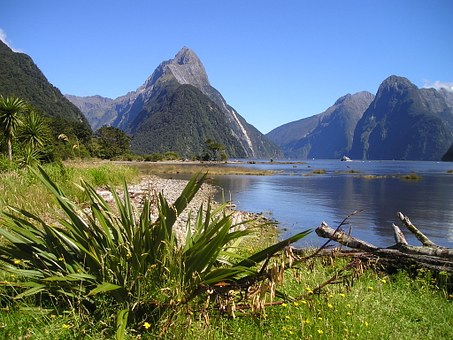

Wunderschön, abgelegen und groß ist der Fjord: Wunderschön, weil beeindruckend groß, mit viel Wasser, Wasserfällen und Grün. Abgelegen, denn hier gibt es neben einem kleine Hafen, einem Hotel und einer Handvoll Häusern keine Zivilisation. Und mit 15 Kilometern Länge ist der Milford Sound das größte Fjord des Fjordland Nationaparks im Südwesten der Südinsel von Neuseeland. Der Milford Sound ist ein Besuchermagnet und die wichtigste Sehenswürdigkeit im Fjordland und vielleicht sogar ganz Neuseelands. Vielleicht, weil er der am leichtesten zugängliche Fjord des Nationalparks ist. Er zählt außerdem zum Weltnaturerbe der UNESCO.
James Cook ist bei der Entdeckung Neuseelands hier einfach vorbeigesegelt, der Fjord sah vom Meer nur aus wie eine kleine unbedeutende Bucht. Erst viel später wurde entdeckt, wie groß der Milford Sound eigentlich ist. Lange war er dann nur mit dem Boot erreichbar, erst 1952 wurde die Straße nach Milford gebaut. Der bekannteste und zugleich höchste Berg ist der Mitre Peak mit fast 1700 Metern. Sein Name rührt von seiner Form und bedeutet auf Deutsch “Bischofs-Mütze.” Von weiten wirkt der Berg gar nicht so hoch, das ändert sich, wenn man mit dem Boot daran vorbei fährt. Am besten erlebt man den Milford Sound übrigens vom Wasser aus, nur so kann man ein Gefühl für seine Dimensionen und seine Schönheit bekommen.
